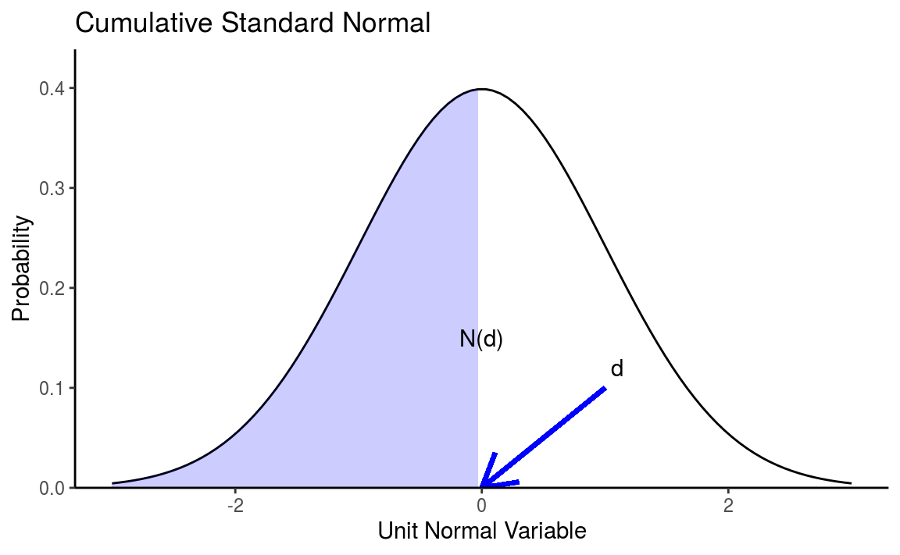

Chapter 1 Numbers
R에서 숫자 형태는 크게 integer와 double로 나눌 수 있습니다. 이 중 integer는 정수를 의미하며, double은 부동소수점 실수를 의미합니다.
1.1 integer와 double의 vector 만들기
먼저 double 형태의 벡터를 만듭니다.
## [1] 1.0 2.5 4.5숫자 뒤에 L을 붙이면 integer(정수) 형태로 입력됩니다.
## [1] 1 6 101.1.1 둘 간의 형태 바꾸기
as.*() 함수를 이용해 각 데이터의 형태(Type)을 바꿀 수 있습니다.
## [1] 1 6 10as.double() 함수를 통해 integer 형태를 double 형태로 바꿀 수 있습니다. as.numeric() 함수는 as.double()과 동일한 역할을 합니다.
## [1] 1 2 4as.integer() 함수를 통해 double 형태를 integer 형태로 바꿀 수 있습니다. 소수점이 사라지고 정수형태로 바뀌었습니다.
1.2 비임의(Non-random) 숫자 생성하기
콜론(:)과 c() 함수를 통해 순서가 있는 숫자 벡터를 생성할 수 있습니다.
## [1] 1 2 3 4 5 6 7 8 9 10콜론을 통해 1에서 10까지 숫자가 생성됩니다.
## [1] 1 5 10c() 함수 내부에 입력한 숫자로 벡터가 생성됩니다.
1.2.1 seq() 함수 이용
seq() 함수를 이용할 경우 더욱 다양하게 숫자 벡터를 생성할 수 있습니다.
## [1] 1 3 5 7 9 11 13 15 17 19 21from에는 시작 숫자, to에는 종료 숫자, by에는 간격을 입력합니다. 즉 1에서 21까지 2 단위로 숫자가 생성됩니다.
## [1] 0.0 1.5 3.0 4.5 6.0 7.5 9.0 10.5 12.0 13.5 15.0 16.5 18.0 19.5 21.0인자에 length.out을 쓸 경우 from에서 to까지 동일한 증가폭으로 15개의 숫자를 생성합니다.
## [1] 1 2 3 4rep() 함수 역시 seq() 함수와 비슷한 역할을 합니다.
## [1] 1 2 3 4 1 2 3 4times 인자를 추가해줄 경우, 해당 숫자만큼 반복되어 벡터가 생성됩니다.
## [1] 1 1 2 2 3 3 4 4each 인자를 추가할 경우, 각 숫자를 n번 반복하여 벡터가 생성됩니다.
1.3 임의(Random) 숫자 생성하기
이번에는 임의의 숫자를 생성하는 방법에 대해 알아보겠습니다.
1.3.1 Uniform Numbers
균등 분포(Uniform distribution)에서 임의의 숫자를 생성하기 위해서는 runif() 함수를 사용합니다.
## [1] 0.2876 0.7883 0.4090 0.8830 0.9405기본적으로 runif() 함수는 0과 1사이에서 임의의 숫자를 생성하며, 괄호 안에 입력된 숫자만큼의 갯수의 난수를 생성합니다.
## [1] 1.139 13.203 22.310 13.786 11.415min과 max인자를 추가할 경우 해당 값 사이에서 난수를 생성합니다.
sample() 함수 역시 Uniform Number를 생성할 수 있습니다.
## [1] 19 13 21 24 25 4 18 24 24 80에서 25까지 숫자중에서 10개의 숫자를 선택하며, replace를 TRUE로 할 경우 복원추출, FALSE로 할 경우 비복원추출을 시행합니다.
1.3.2 Non-Uniform Numbers
비균등 확률 분포에서 난수를 생성하기 위해서는 크게 4가지 함수가 있습니다.
- r*: 난수 생성
- d*: 밀도(Density) 혹은 확률 질량 함수(Probability mass function)
- p*: 누적 분포(Cumulative distribution)
- q*: 분위수(Quantile)
1.3.2.1 정규 분포(Normal Distribution)
R에서 정규 분포 관련 함수는 *norm() 입니다.

## [1] 0.4008 0.1107 -0.5558 1.7869 0.4979 -1.9666 0.7014 -0.4728 -1.0678
## [10] -0.2180rnorm() 함수를 이용하여 평균이 0, 표준편차가 1인 정규분포 함수에서 난수 10개를 생성합니다.
## [1] 0.3989d = 0인 지점의 밀도를 계산합니다.
## [1] 0.5d = 0인 지점의 누적 분포를 구합니다.
## [1] 0누적 분포가 0.5인 지점의 분위수를 구합니다.
1.3.2.2 기타 분포
정규 분포 외에도 여러 분포에서 난수를 생성할 수 있습니다. 각 함수별 인자는 help()를 통해 확인할 수 있습니다.
- 이항 분포: rbinom, dbinom, pbinom, qbinom
- 푸아송 분포: rpois, dpois, ppois, qpois
- 지수 분포: rexp, dexp, pexp, qexp
- 감마 분포: rgamma, dgamma, pgamma, qgamma
1.4 반올림
숫자의 올림, 내림, 반올림 등을 실행합니다. 먼저 다음과 같이 숫자를 입력합니다.
## [1] 1 1 2 2 2 3 3 3 4 4 4 5 5 6 6round() 함수는 가장 가까운 정수로 반올림을 합니다.
## [1] 1.00 1.35 1.70 2.05 2.40 2.75 3.10 3.45 3.80 4.15 4.50 4.85 5.20 5.55 5.90함수 내부에 digits 인자를 추가해 줄 경우, 해당 자리수 만큼 반올림을 합니다.
## [1] 1 2 2 3 3 3 4 4 4 5 5 5 6 6 6ceiling() 함수는 올림을 실행합니다.
## [1] 1 1 1 2 2 2 3 3 3 4 4 4 5 5 5floor() 함수는 내림을 실행합니다.